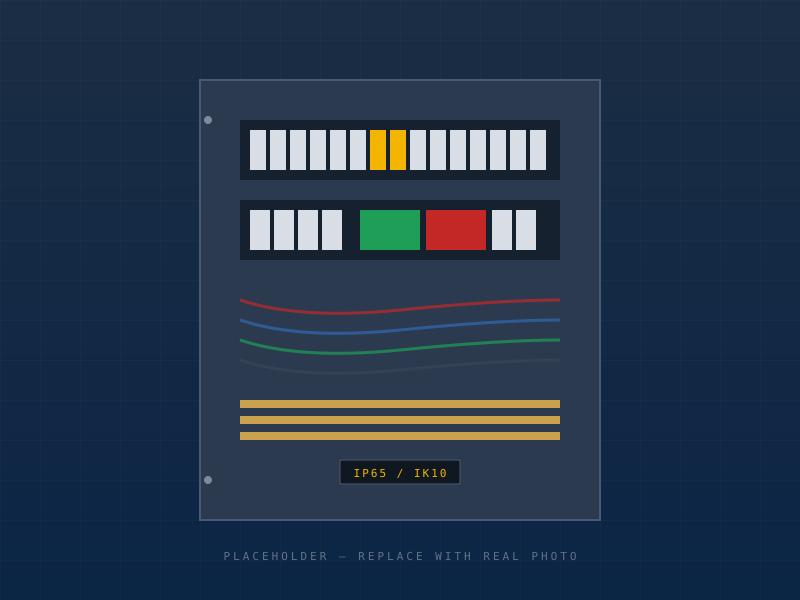
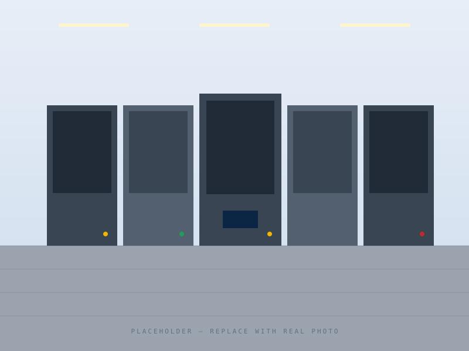
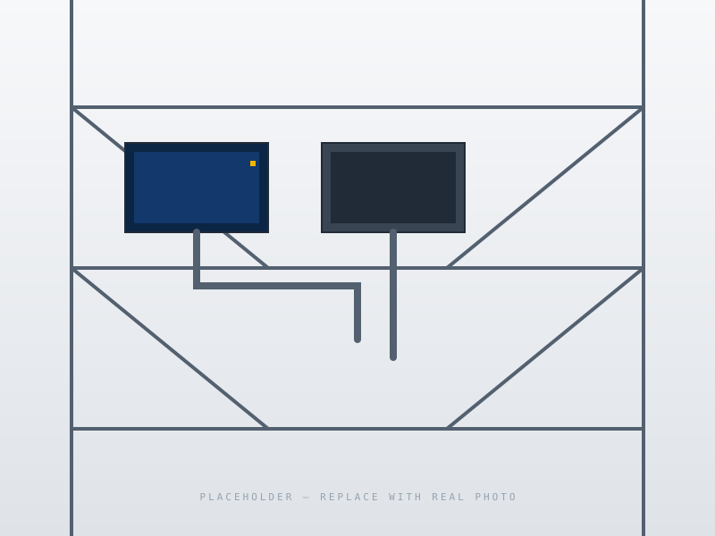

Quadri elettrici industriali
Realizziamo quadri di distribuzione, comando e protezione per impianti industriali e centrali tecniche, con carpenterie e componenti selezionati in base alla distinta o al capitolato.
Scopri il servizioQuadri e armadi elettrici industriali
Progettiamo, assembliamo, cabliamo e collaudiamo quadri elettrici industriali per impianti, centrali tecniche, bordo macchina e revamping. Tu ci mandi schema, distinta o foto del quadro: noi ti restituiamo una fornitura chiara, tracciabile e pronta per la messa in servizio.

Cosa facciamo
Lostar Electric lavora per installatori, progettisti, aziende e manutentori che hanno bisogno di un quadro elettrico costruito bene e consegnato senza ambiguità. Gestiamo forniture nuove, modifiche su quadri esistenti, cablaggi bordo macchina e documentazione finale.
Ogni lavoro parte da un controllo tecnico: componenti, ingombri, morsettiere, protezioni, potenza, tempi e documenti richiesti. Così il preventivo non resta una stima generica, ma diventa una base concreta per partire.
Servizi principali
Realizziamo quadri di distribuzione, comando e protezione per impianti industriali e centrali tecniche, con carpenterie e componenti selezionati in base alla distinta o al capitolato.
Scopri il servizioCabliamo quadri per macchine e linee automatiche, con attenzione a PLC, I/O, ausiliari, morsettiere campo, sicurezza e leggibilità per chi farà manutenzione.
Scopri il servizioInterveniamo su quadri esistenti per modifiche, ampliamenti, sostituzione componenti, verifica funzionale e aggiornamento della documentazione tecnica.
Scopri il servizioCon House Core progetti gratuitamente ambienti, luci e impianti. Ci mandi i layer e definiamo insieme hardware ed eventuale installazione.
Scopri House Core
Metodo Lostar
Quadri elettrici industriali
Realizziamo quadri elettrici per impianti industriali, centrali tecniche, linee di servizio e reparti produttivi. Partiamo dal tuo schema o dalla tua distinta e costruiamo un quadro ordinato, collaudato e documentato.
Richiedi preventivo quadroPer impianti e cantieri
Un quadro elettrico non è solo un insieme di componenti. Deve rispettare ingombri, potenza, protezioni, accessibilità, manutenzione, marcature e documenti finali. Per questo verifichiamo il materiale ricevuto prima di quotare e segnaliamo eventuali criticità tecniche prima che arrivino in officina.
Possiamo lavorare su schemi già definiti, distinte tecniche, capitolati o richieste funzionali ancora da completare. L'obiettivo resta lo stesso: consegnare un quadro che l'installatore possa montare e collegare con meno incertezze possibile.
Tipologie
Bordo macchina e automazione
Cabliamo quadri per macchine, linee automatiche e impianti produttivi, con attenzione a PLC, segnali, ausiliari, sicurezza e ordine interno. Un quadro fatto bene si capisce anche dopo anni.
Parlaci della macchina
Per OEM e integratori
Un quadro bordo macchina deve essere compatto, chiaro e coerente con la macchina che comanda. Per questo lavoriamo con schemi, liste I/O, distinte e indicazioni di cablaggio campo, mantenendo ordine su morsettiere, ausiliari, protezioni e segnalazioni.
Il nostro obiettivo è aiutare chi installa e chi farà manutenzione: cavi siglati, morsetti riconoscibili, percorsi leggibili e documentazione allineata alla realizzazione effettiva.
Il punto
Un quadro bordo macchina deve far risparmiare tempo a chi lo installa e a chi lo riaprirà tra cinque anni.
Collaudo, revamping e documentazione
Modifiche, ampliamenti, verifiche funzionali e documentazione tecnica per quadri già installati o in fase di consegna. Quando un quadro deve tornare leggibile, sicuro e documentato, partiamo da quello che c'è e lo riportiamo sotto controllo.
Richiedi verifica tecnica
Quando serve
Un quadro può dover cambiare per molte ragioni: nuove utenze, componenti obsoleti, schema non aggiornato, modifiche fatte nel tempo, consegna da validare o manutenzione diventata difficile. In questi casi interveniamo con un approccio ordinato: rilievo, analisi, modifica, controllo e documentazione.
Non promettiamo scorciatoie. Promettiamo chiarezza: cosa si può fare, cosa conviene rifare, cosa va documentato e quali limiti tecnici vanno rispettati.
Output consegnabili
Preventivo tecnico
Per preparare un preventivo serio abbiamo bisogno di capire il quadro: schema, distinta, foto, capitolato, tempi e vincoli. Se manca qualcosa, te lo segnaliamo subito e costruiamo insieme il perimetro corretto.